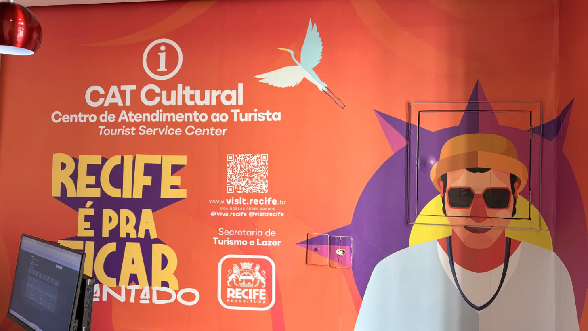

Os órgãos públicos oferecem algum suporte aos trabalhadores de turismo do Bairro do Recife? A resposta dessa pergunta, para ser sincera, é: Em partes. Mesmo com uma arrecadação de R$ 283 milhões em todo o estado de Pernambuco no ano de 2025, segundo dados divulgados pelo Observatório do Turismo de Pernambuco da Empresa Pernambucana de Turismo (Empetur), poucas ações são feitas em favor dessas pessoas.
O boletim concedido pelo Observatório revelou que mais de 100 mil empregos formais estavam ocupados na área no estado durante o segundo trimestre de 2026. Em 2025, Pernambuco possuía cerca de 67.616 pessoas jurídicas formalizadas com o Cadastro Nacional da Pessoa Jurídica (CNPJ) na área do turismo, sendo 57,9% concentradas na Região Metropolitana do Recife, também de acordo com o Observatório de Turismo de Pernambuco. Entre esse total, o Recife é a cidade com o maior número de empresas ativas no estado, somando um total de 18.832 empresas no mesmo ano.
Em relação ao Observatório de Turismo do Recife, a central atua na análise estatística do setor na capital pernambucana, com o trabalho de monitoramento e coleta de dados para produzir boletins informativos e levantamentos sobre o fluxo e o impacto do turismo recifense. Dessa forma, o Bairro do Recife é o principal ponto mencionado em pesquisas de demanda turística por ser o maior polo cultural da cidade. Na análise desenvolvida sobre os trabalhadores de turismo, o perfil, em sua maioria, está mais ligado no setor de serviços e de cultura, além da presença de empresas voltadas para o segmento no bairro. Segundo o levantamento, a região também possui dados expressivos no setor de alojamento e de alimentação.
No caso do Olha!Recife, são oferecidos passeios turísticos gratuitos de catamarã, ônibus, a pé e de bicicleta. A oferta dos roteiros passa por diversos temas, sendo mais de 300 nas quatro modalidades. No total, 18 guias de turismo estão cadastrados para trabalhar no serviço. Segundo o Observatório do Turismo do Recife, até setembro de 2026, 36 passeios foram realizados pelo projeto. Ao todo, 5.900 participantes realizaram os roteiros, com um pico de 931 pessoas durante o mês de agosto. Em sua maioria, as pessoas optaram pela modalidade catamarã. No mesmo período, o Recife teve um faturamento total de mais de R$ 918 milhões com o turismo.
E o que é oferecido para os trabalhadores?
A qualificação tende a ser o maior foco de ação da Prefeitura do Recife (PCR) para esses trabalhadores em detrimento a manutenção dessas pessoas no emprego. Muitas vezes, são ofertados apenas cursos gratuitos profissionalizantes por meio da plataforma GO Recife e microcréditos para empreendedores diversos. Outras opções para esse público são as capacitações fornecidas pela Escola de Turismo do Recife, que promove preparações específicas voltadas para o setor turístico.
Ao obter a opinião dos guias de turismo entrevistados para a produção deste trabalho, uma coisa ficou clara. Muitos não se sentem valorizados pelo poder público, tanto na esfera municipal, estadual e federal. No relato de guias turísticos como Fabiano Barbosa, que trabalha com turismo desde 1999, os cursos oferecidos acabam ficando muito restritos a quem participa como guia no Olha!Recife ou de outros passeios promovidos pela prefeitura, podendo não chegar para ajudar mais pessoas.
Na visão do Sindicato dos Guias Turísticos de Pernambuco (Singtur-PE), falta também um apoio adequado para a categoria. Por exemplo, o suporte da Empetur dentro do próprio sindicato vem com o local que foi cedido para o trabalho da mesa-diretora e algumas ajudas para a comemoração de datas como o Dia Estadual do Turismo, mas nada mais do que isso.
Por se tratar de profissionais liberais, cada trabalhador faz o seu próprio calendário e horário de acordo com a sua demanda individual, decidindo, inclusive, quantos e quais dias pode folgar, o que demonstra como a autonomia da profissão pode ter os seus benefícios e malefícios.
Para o Singtur-PE, a gestão pública poderia ter um olhar mais cuidadoso com o Recife Antigo para proporcionar um melhor turismo para os visitantes. Atitudes como a viabilização de reuniões entre as instituições seriam capazes de melhorar a infraestrutura do bairro. Sendo a maior ferramenta de trabalho dos guias turísticos, o descaso das ruas pode acabar impactando a qualidade do trabalho fornecido, além de afetar a visão e opinião dos turistas.
De acordo com o Programa de Reabilitação Urbana do Centro do Recife (Recentro), que pertence ao Gabinete do Centro do Recife, trabalhos no Bairro do Recife vêm sendo desenvolvidos pela pasta. É o caso do projeto Recife Antigo Vivo, lançado em 2026 com o objetivo de promover um pacote de iniciativas que buscam melhorar o Centro da cidade e pretendem requalificar espaços públicos, qualificar a paisagem urbana, ordenar a fiação aérea e melhorar a segurança pública da região, entre outras atividades. Mas como foi possível identificar nos relatos, a realidade vivenciada no bairro atualmente é outra. Queixas sobre a falta de conservação dos prédios históricos, ausência de iluminação pública e sinalização costumam ser levantadas por quem trabalha levando turistas aos principais pontos turísticos da área.
Já em um equipamento que é mantido pela prefeitura como o Centro de Atendimento ao Turista (CAT), que está localizado na Praça do Arsenal, um relato que chama a atenção é a falta de auxílio para quem trabalha no local. O atendimento é realizado por uma equipe de cinco estagiários, que devem estar preparados para tirar as dúvidas dos visitantes sempre que solicitados. Eles podem ainda fazer visitas guiadas com o Giro Recife, serviço que oferece passeios gratuitos em um carrinho elétrico pelas ruas do Bairro do Recife, ou o Olha!Recife. No entanto, acaba não existindo muito treinamento ou curso introdutório para capacitar os estudantes para exercer essa função.

Após ter acesso a esses relatos, cabe a reflexão: os responsáveis por cuidar do Recife Antigo estão pensando nos trabalhadores que são os “porta-vozes” do destino turístico e apresentam as principais riquezas do bairro para os visitantes? Como construir um local com um turismo convidativo se falta esse olhar para quem já está dentro do setor? Afinal, a cidade deve ser reconhecida não apenas como um espaço de lazer, mas também como um território de pertencimento e construção social, melhorando a vivência dos trabalhadores e dando atenção às queixas apresentadas por essas pessoas para desenvolver a área turística de forma mais eficiente e assertiva.